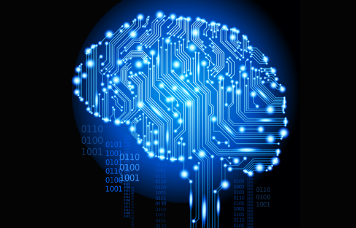

Marchine learning(ML)
is the study of computer algorithms that improve automatically through experience and by the use of data. It is seen as a part of artificial intelligence. Machine learning algorithms build a model based on sample data, known as "training data", in order to make predictions or decisions without being explicitly programmed to do so.Machine learning algorithms are used in a wide variety of applications, such as email filtering and computer vision, where it is difficult or unfeasible to develop conventional algorithms to perform the needed tasks. A subset of machine learning is closely related to computational statistics, which focuses on making predictions using computers; but not all machine learning is statistical learning. The study of mathematical optimization delivers methods, theory and application domains to the field of machine learning. Data mining is a related field of study, focusing on exploratory data analysis through unsupervised learning.In its application across business problems, machine learning is also referred to as predictive analytics.

Big Data
Big data is a field that treats ways to analyze, systematically extract information from, or otherwise deal with data sets that are too large or complex to be dealt with by traditional data-processing application software. Data with many fields (columns) offer greater statistical power, while data with higher complexity (more attributes or columns) may lead to a higher false discovery rate. Big data analysis challenges include capturing data, data storage, data analysis, search, sharing, transfer, visualization, querying, updating, information privacy, and data source. Big data was originally associated with three key concepts: volume, variety, and velocity. The analysis of big data presents challenges in sampling, and thus previously allowing for only observations and sampling. Therefore, big data often includes data with sizes that exceed the capacity of traditional software to process within an acceptable time and value. Current usage of the term big data tends to refer to the use of predictive analytics, user behavior analytics, or certain other advanced data analytics methods that extract value from big data, and seldom to a particular size of data set. "There is little doubt that the quantities of data now available are indeed large, but that's not the most relevant characteristic of this new data ecosystem." Analysis of data sets can find new correlations to "spot business trends, prevent diseases, combat crime and so on". Scientists, business executives, medical practitioners, advertising and governments alike regularly meet difficulties with large data-sets in areas including Internet searches, fintech, healthcare analytics, geographic information systems, urban informatics, and business informatics. Scientists encounter limitations in e-Science work, including meteorology, genomics,connectomics, complex physics simulations, biology, and environmental research. The size and number of available data sets has grown rapidly as data is collected by devices such as mobile devices, cheap and numerous information-sensing Internet of things devices, aerial (remote sensing), software logs, cameras, microphones, radio-frequency identification (RFID) readers and wireless sensor networks.The world's technological per-capita capacity to store information has roughly doubled every 40 months since the 1980s; as of 2012, every day 2.5 exabytes (2.5×260 bytes) of data are generated.Based on an IDC report prediction, the global data volume was predicted to grow exponentially from 4.4 zettabytes to 44 zettabytes between 2013 and 2020. By 2025, IDC predicts there will be 163 zettabytes of data.One question for large enterprises is determining who should own big-data initiatives that affect the entire organization. Relational database management systems and desktop statistical software packages used to visualize data often have difficulty processing and analyzing big data. The processing and analysis of big data may require "massively parallel software running on tens, hundreds, or even thousands of servers". What qualifies as "big data" varies depending on the capabilities of those analyzing it and their tools. Furthermore, expanding capabilities make big data a moving target. "For some organizations, facing hundreds of gigabytes of data for the first time may trigger a need to reconsider data management options. For others, it may take tens or hundreds of terabytes before data size becomes a significant consideration.Programming
A programming language is a formal language comprising a set of instructions that produce various kinds of output. Programming languages are used in computer programming to implement algorithms. Most programming languages consist of instructions for computers. There are programmable machines that use a set of specific instructions, rather than general programming languages. Since the early 1800s, programs have been used to direct the behavior of machines such as Jacquard looms, music boxes and player pianos.The programs for these machines (such as a player piano's scrolls) did not produce different behavior in response to different inputs or conditions. Thousands of different programming languages have been created, and more are being created every year. Many programming languages are written in an imperative form (i.e., as a sequence of operations to perform) while other languages use the declarative form (i.e. the desired result is specified, not how to achieve it). The description of a programming language is usually split into the two components of syntax (form) and semantics (meaning). Some languages are defined by a specification document (for example, the C programming language is specified by an ISO Standard) while other languages (such as Perl) have a dominant implementation that is treated as a reference. Some languages have both, with the basic language defined by a standard and extensions taken from the dominant implementation being common.